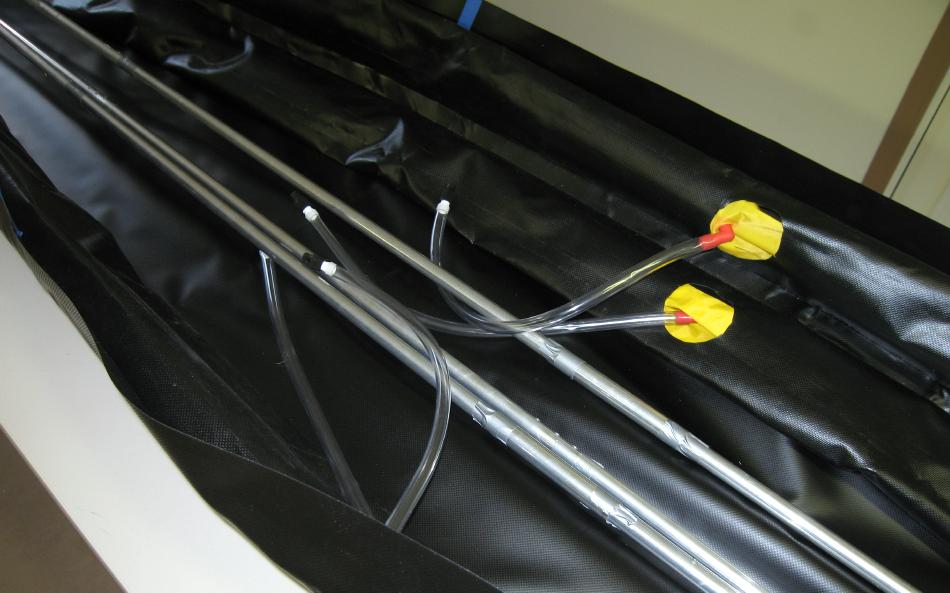

| Sonnet ( Remove Hull) | Menu Last Page Next Page |
|

After inserting the sponsons, assemble the side stringers and place on the floor of the boat. Since there is no deck use duct tape every couple of feet to hold the boats shape during initial inflation. The side stringers should have the foreward and aft sections connect at the same position as the sponson valves. Look through the Assembly Instructions
for more details. Use the {Back} key to return.
|
|